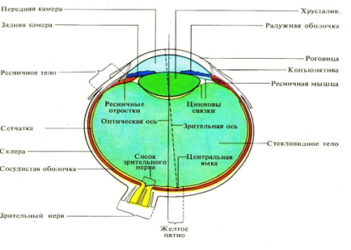

4-MAVZU. SEZGI ORGANLARI – KO’RISH, ESHITISH ,TERI,TAM VA XID BILISH ANALIZATORLARINING TUZILISHI
REJA:
1.Analizatorlarining tuzilishi
2.Ko’rish organining tuzilishi
3. Ko’zning yordamchi apparatlari
4.Eshitish va vestibulyar analizatorlar
5.Teri,tam va xid bilish analizatorlarining tuzilishi
Tayanch tushuncha: reseptor, effektor, ekstroreseptorlar, interoreseptorlar proprioreseptor, ko’z soqqasi, gavxar, tashqi, o’rta, ichki quloq, chig’anoq, so’rg’ich, derma.
Odam va hayvonlar analizatorlar yordamida tashqi dunyodagi narsa, hodisalarni qabul qiladi. I.P.Pavlov ta’limoti bo’yicha har bir analizator uch qismidan - qabul qiluvchi apparat – reseptor, o’tkazvchi qism – sezuvchi nerv va sezish markazidan tashkil topgan.
Sezgi organlar uzoq vaqt davom etgan tarixiy rivojlanish prosessida shakllanib, murakkablashib, ta’sirlovchining alohida turlariga moslashib borgan.
Odam organizmi analizatorlar yordamida tashkil dunyo bilan chambarchas bog’langan bo’lib, vositachi hisoblanadi. F.Engels o’zining «Tabiat dialektikasi» nomli asarida odamning sezgi organlari hayvonlar sezgi organlaridan tubdan farq qilishini va ular yaxshi rivojlanganligini ta’kidlab o’tgan. I.M. Sechenov muskullar analizatorini o’rganib, sezish reseptorlari bilan harakat reseptorlari bir-biriga bog’liqligini aniqlagan.
Reseptorlar xususiyatiga ko’ra, uch gruppaga; tashqi – ekstroreseptorlar, ichki – interoreseptorlar va pay-muskullarda joylashgan proprioreseptorlarga bo’linadi.
Ekstroreseptorlar tashqi ta’sirni qabul qiladi. Ular ko’rish, eshitish, ta’m bilish, hid bilish, teri analizatorlarida joylashgan bo’ladi.
Interoreseptorlar mexanikaviy, ximiyaviy, termik ta’sirni qabul qiladi, ular ichki organlarda joylashgan.
Proprioreseptorlar tanada chuqur joylashgan bo’lib, tana muvozanatining o’zgarishi, fazodagi holati haqidagi ta’sirni qabul qiladi.
KO’RISH ORGANI
Ko’rish organi ikki qismdan yordamchi organlar va asosiy qism – ko’z soqqasidan iborat. Ko’rish organi yordamida tashqi dunyodagi narsalarning shakli, kattaligi, ko’zdan yaqin-uzoqligi va buyumlarning rangi to’g’risida tasavvur hosil bo’ladi. Ko’z soqqasi (bulus oculi) sut emizuvchi hayvonlarda va odamda yumaloq bo’lib, ko’z kosasi chuqurligida joylashgan. Uning ustki qavati oqsil parda – sklera bo’lib, bu parda old tomonda shox moddacha aylanadi. Shox parda bilan oqsil parda orasida venoz kanal joylashgan.
Oqsil parda (sclera) oldinda shox pardaga aylanadi. Shox parda (cornea) o’ta ko’rsatuvchan bo’lib, qon tomirlari bo’lmaydi.

15.1.Rasm. Odamning ko‘z tuzilishi.
Tomirli parda (tunica vosculesa buldi) shox parda tagida joylashgan bo’lib, qon tomirlarga boy. Tomirli parda ko’z soqqasining oldingi tomonida rangdor – yoy pardaga aylanadi.
Yoy parda (iris)da qon tomirlar, pigmentlar bo’ladi. Ko’zning rangi pigmentlarga bog’liq, kamdan kam hollarda yoy pardada pigment bo’lmay, ichki qon tomirlar ko’rinib turadi. Ko’zi shunday kishilar albinozlar deyiladi. Yoy pardaning o’rtasida yumaloq teshik bo’lib, ko’z qorachig’i (pupilla) deyiladi. Yorug’lik nurlari shu teshik orqali ichkariga o’tadi. Bu teshikning diametrini o’zgartiruvchi halqasimon va radial muskullar ey pardada bo’ladi. Halqasimon muskullar qisqarganda qorachiq torayadi, radial muskullar qisqarganda kengayadi.
Ko’z qorachig’ining kengayishi va torayishi yorug’lik miqdoriga qarab refleks yo’l bilan boshqarilib turadi. Shox parda bilan yoy parda orasida oldingi kamera deb ataladigan bo’shliq bo’ladi.
To’r parda tomirli parda tagida bo’lib, unda ko’rish reseptorlari joylashgan. Bu reseptorlar ko’rish nervining oxirgi – yorug’ni sezuvchi qismi hisoblanadi. To’r parda murakkab bo’lib, mikroskopda ko’rilganda o’n qavatdan tuzilganligi aniqlangan. To’r pardadagi nerv hujayralari bir-biriga bog’langan uchta neyrondan iborat. Bu hujayralar tayoqcha va kolbacha shaklida bo’ladi. Odam ko’zida tayoqchasimon hujayralar soni 130 millionga etadi, ular kechasi qo’zg’aladi. Kolbasimon hujayralar 9 millionga yaqin bo’lib, kunduzi qo’zg’aladi (rangni ajratadi). Tayoqchasimon, kolbachasimon reseptorlarda qabul qilingan impulslar ikkinchi neyronga o’tadi. Ulardan uchinchi neyronga o’tadi.
Uchinchi neyron neyritlardan iborat ko’rish nervini hosil qiladi, u ko’zning orqa qismidan chiqadi va ko’rish yo’lini hosil qilib, tizzasimon tanagacha boradi. To’r pardaning yorug’ni eng yaxshi sezuvchi qismi sariq dog’ deyiladi, u ko’zning orqa qutbida joylashgan. Sariq dog’ning o’rtasi bir oz chuqurlashgan bo’lib, u markaziy chuqurcha deyiladi. Ko’zning oldingi qutbi bilan markaziy chuqurcha orasidagi chiziq ko’zning optik o’qi deyiladi. Ko’zning optik moslamalariga shox parda, oldingi kamera suyuqligi, ko’z gavhari va shishasimon tana kiradi. Ko’rish nervining ko’z soqqasidan boshlanadigan qismi ko’r dog’ deyiladi. To’r pardaning bu qismida yorug’ni sezuvchi reseptorlar bo’lmaydi. Bu erdan to’r pardani ta’minlovchi qon tomirlar o’tadi.
Ko’z gavhari (lens) yoy parda orqasida bo’lib, ikki tomoni qavariq linzaga o’xshaydi. Gavhar egiluvchan parda bilan o’ralgan bo’lib, unda qon tomirlar va nervlar bo’lmaydi. Juda tiniq moddadan iborat gavharning orqa qismida shishasimon suyuqlik bo’ladi. Ko’z gavhari kipriksimon muskullar yordamida ikki yon tomondan tomirli pardaga tortilib turadi. Bu muskullar yordamida ko’z gavhari yupqalashadi yoki qavaradi. Ko’z gavhari va kipriksimon muskullar bilan parda orasida halqasimon bo’shliq bo’lib, u ko’zning keyingi kamerasi deyiladi. Ko’zning keyingi va oldingi kameralarida tiniq suyuqlik bo’ladi. Ko’z soqqasining ichi shishasimon suyuqlik (corpus vitreum) bilan to’la bo’ladi. Bu suyuqlik shaffof bo’lib, qon tomirlari bo’lmaydi.
KO’ZNING YORDAMCHI APPARATLARI
Ko’zning yordamchi apparatlariga ko’z qovoqlari, ko’z yosh bezi, ko’z soqqasini harakatlantiruvchi muskullar, yog’simon va tana va fassiya kiradi.
Yuqorigi va pastki qovoqlar kipriklar bilan birga ko’zni himoya qilib turadi. Ko’z qovoqlarining ichki qavati shiliq parda – qon’yunktiva bilan qoplangan bo’lib, u ko’z soqqasida yoy pardagacha davom etadi. Ko’z yosh bezi ko’zning tashqi yuqorigi burchagida, ko’z yosh xaltachasi ichki pastki burchagida joylashgan. Ko’z yosh bezi har doim suyuqlik ishlab chiqaradi. Bu suyuqlik ko’z soqqasini yuvib, ichki burchakdagi ko’z yosh ko’liga, undan yosh xaltachasiga keladi. Undan ko’z yosh kanali orqali burun bo’shlig’iga o’tadi.
Ko’z soqqasining muskullariga: yuqorigi, pastki, chetki, ichki to’g’ri va ikkita qiya muskullar kiradi. Ular ko’z soqqasini turli o’q atrofida harakatlantiradi.
Yog’simon tana ko’z soqqasi bilan ko’z chuqurligi orasidagi bo’shliqni to’ldirib turadi. Yog’simon tana bilan ko’z soqqasi orasida fassiya joylashgan. Bular orasida bo’shliq bo’lib, u ko’z harakatida ahamiyatga ega.
ESHITISH VA VESTIBULYAR ANALIZATORLAR
Ichki quloqda eshitish va vestibulyar apparatining reseptorlari joylashgan. Vestibulyar apparat reseptorlar odam kallasining va butun tanasining o’zgarishidan hosil bo’ladigan ta’sirni, proprioreseptiv reseptorlardan kelayotgan ta’sirni sezadi. Evolyusion rivojlanish davomida bu analizatorlarning tuzilishi ancha murakkablashib borgan. Eshitish reseptorlari odamda chig’anoqning spiral organida, vestibulyar qismi yarim oysimon aylana kanallarda - quloq dahlizining sezuvchi dog’ida joylashgan. Odamning eshitish oragni tashqi, o’rta, ichki quloqdan iborat bo’ladi.
15.2. Rasm. Eshitish analizatori.
Tashqi quloq quloq suprasi va tashqi tovush yo’lidan iborat bo’lib, quloq suprasi (aurilula) hayvonlarda tovushni tutishga yordam beradi, u harakatchan bo’ladi. Odam quloq suprasining muskullari yaxshi rivojlanmagan uchun harakat qilmaydi. Quloq suprasi egiluvchan tog’aydan tuzilgan teri bilan qoplangan. Uning ichida burmalar bo’lib, ular tovush to’lqinlarning yo’nalishiga yordam beradi. Tashqi eshitish yo’li (meatus acustucus externus) 2.5sm uzunlikda bo’lib, bir oz qiyshiq kanaldan iborat. Kanalning ichi tukli, bezli epiteliy bilan qoplangan. Tuklar himoya vazifasini bajardi, bezlar sariq suyuqlik ishlab chiqaradi.
O’rta quloq bo’shliq bo’lib tashqi qulodan nog’ora parda bilan ajralgan. Nog’ora parda (membrana tympani) yupqa pishiq bo’lib, nerv tolalari va qon tomirlari bilan ta’minlangan. U egiluvchan pishiq biriktiruvchi to’qimadan tuzilgan, diametri 9-11mm, qalinligi 0,1 mm, nerv va qon tomirlarga boy bo’ladi. Nog’ora parda muskullar yordamida tarang tortilgan bo’lib, tovush to’lqinini o’zgartirmay o’tkazadi.
O’rta quloq bo’shlig’i nog’ora bushlig’i (cavum tumpani) deyiladi, uning hajmi 0,75mm ga teng keladi. So’rg’ichsimon bo’shliqlar o’rta quloq orqali halqum bilan tutashadi. O’rta quloq Evstaxiev nayi orqali halqumga qo’shilgan bo’ladi. Evstaxiev nayi 4 sm uzunlikda bo’lib, tashqi quloq bilan o’rta quloqdagi bosimning muvozanatlanishida ishtirok etadi. O’rta quloq bo’shlig’ida uchta eshitish suyakchasi: bolg’acha (malleus) sandon (incus), uzangi (stapes) joylashgan bo’lib, bog’lag’ichlar yordamida bir-biriga birikkan bo’ladi. Bolg’acha dastasi bilan nog’ora pardaga, boshchasi bilan sandonga tutashgan bo’ladi. Sandon o’sig’i bilan uzangiga tutashadi. Uzangi serbar plastinkasi bilan ovalsimon teshikka birikadi. Bu suyaklar odamning butun hayoti davomida o’smaydi. O’rta quloqdagi mayda muskullar qisqarishi bilan suyakchalar harakatga kelib, tovush to’lqinlarini ichki quloqqa o’tkazadi.
Ichki quloq murakkab tuzilgan bo’lib, eshitish analizatorining eng muhim qismdir. Ichki quloq, ya’ni labirint uch qismdan: quloq dahlizi, yarim aylana kanallar va chig’anoqdan iborat.
Labirint murakkab tuzilgan bo’lib, parda labirint va suyak labirintdan iborat. Suyak labirint tagida perilimfa, parda labirint ichida endolimfa suyuqliklari bo’ladi. Quloq dahlizi oval shakldagi bo’shliq bo’lib, ettita teshigi bor. Ovalsimon teshik bilan o’rta quloqqa, yumaloq teshik bilan chig’anoqqa va qolgan 5ta teshik bilan yarim doira kanallarga birikadi. Dahlizning orqasida yarim doira kanallar (canales semicircularis) bo’lib, ular bir-biriga perpendikulyar joylashgan. Yarim doira kanallar endolimfa suyuqligi bilan to’la,ichida otolit toshlari bo’ladi. Yarim doira kanallarning uchi kengaygan bo’lib, vestibulyar nerv uchlari shu erda tugaydi.
Chig’anoq (cochlea) 2,5 aylanadan tuzilgan bo’lib, spiralga o’xshaydi. Uning uchi o’rta quloqqa qarab turadi, asosi ichki eshitish yo’lini berkitadi. Chig’anoq spirali suyak to’siq bilan ikkiga ajraladi.
Uning ichida ikkita parda (asosiy va Reysner pardalari) orasida Kortiev organ joylashgan.
Chig’anoq ichida ikki qator cho’ziq hujayralar bo’lib, ular yuqorida aytilgan Kortiev organini hosil qiladi. Bu ikki qator hujayralar bir-biriga yotiroq joylashib, qortiev ravoqlarini hosil qiladi. Kortiev organining silindrsimon epiteley ustunchasining ichki yuzasidagi hujayralar tukchalar bilan qoplangan. Bu tukchalar sezuvchi reseptorlar hisoblanadi, eshitish nervi shu tukchalardan boshlanadi. Bu erda eshitish nervining mielin pardasi yo’qoladi. Dahliz va yarim aylana kanallar muvozanati saqlovchi organlar hisoblanadi.
Quloqning barcha qismlari arteriya qon tomirlari bilan ta’minlangan bo’lib, ular anastomozlar hosil qiladi.
Vestibulyar analizator
Tana holatini sezishda vestibulyar analizatorning ahamiyati katta. Vestibulyar analizator tana harakati tezlashishi, sekinlashishi va boshning fazodagi holatini o'zgarishi haqidagi axborotlar asosida skelet mushaklari tonusining qayta taqsimlanishini ta'minlaydi va muvozanat saqlash imkoniyatini yaratadi.
Chakka suyak piramidasidagi labirintda vestibulyar sensor tizimning chet tuzilmalari joylashgan. Labirint suyakdan iborat bo'lib, uchta yarim doira kanallaridan, utrikulyus, sakkulyus va chig'anoqdan tashkil topgan. Suyak labirinti ichida uning shaklini takrorlaydigan parda labirint joylashgan. Suyak va parda labirintlar oralig'idagi bo'shliq perilimfaga to'lgan bo'lsa, parda labirint bo'shlig'i endolimfaga to'lgan.
Yarim doira kanallarning har biri utrikulyusda tugaydi va ularni utrikulyusga qo'shiladigan qismi kengayib ampula hosil qiladi. Ampula ichida qirrali ampula kristasi joylashgan bo'lib, ushbu kristalarni ikki turdagi tukli retseptor hujayralar va tayanch hujayralar qoplab turadi. Tukli hujayralar ikkilamchi retseptorlar bo'lib, afferent tola bilan sinaps orqali bog'langan. Birinchi turdagi tukli hujayralar asosini, yakka afferent tolaning oxiri qadoq shaklida qamrab oladi va sinaps hosil qiladi. Bu turdagi retseptorni innervatsiyalaydigan efferent tola hujayraning o'zi bilan bevosita bog'lanmaydi. U, retseptor asosini qamrab olgan efferent tola oxirida sinaps hosil qiladi. Ammo, ikkinchi turdagi tukli hujayralar afferent va efferent tolalar bilan sinapslar orqali bevosita bog'langan. Ikkala turdagi retseptor hujayralarning uchlari kiprikchalarga (tuklarga) ega bo'lib, har qaysi hujayralarning 60-80 stereotsiliyasi va bitta kinotsiliyasi bor.
Retseptor va tayanch hujayralardan tashkil topgan epitelial qavatni mukopolisaxaridlardan tashkil topgan shilimshiq massa - kapula qoplab turadi. Ampulani ichida kapula to'planib turadi. Tezlashish sababli paydo bo'lgan endolimfa harakati bu massani siljishiga va unga botgan tukchalarning egilishiga olib keladi. Egilgan tuklar retseptor hujayralarni qo'zg'atadi yoki tormozlaydi.
Sakkulyus va utrikulyusning makulalarida (dog'larida) ham ikki turdagi tukli retseptor hujayralar bo'ladi. Bu retseptorlarni, kalьtsiy tuzlaridan hosil bo'lgan kristallarni - otolitlarni o'z ichiga qamrab olgan, jelatinsimon otolit membrana bosib turadi.
Yerning gravitatsiya maydonida tana holatining o'zgarishi otolit membrananing siljishiga, retseptor hujayralarning tuklarini egilishiga va ulardan markazga intiluvchi impulьslarning sonini ko'payishiga yoki aksincha, kamayishiga olib keladi. Demak, utrikulyus makulasi gravitatsiya maydoniga nisbatan tana holati o'zgarishlarini sezadi. Sakkulyus makulasi, utrikulyusga bu ishda yordam beradi va tebranishlarni (vibratsiyani) ham sezadi. O'zaro perpendikulyar turgan uchta yarim doira kanallarning ampulalaridagi retseptorlar burchak tezlanishlarni ta'siriga javob beradi.
Tukli hujayralarning adekvat ta'sirotlarga qanday javob berishi tuklarning qaysi tomonga egilishiga bog'liq bo'ladi. Agar tuklar kinotsiliya tomonga egilsa, retseptor hujayralarning impulьs hosil qilish faoliyati kuchayadi va, aksincha, stereotsiliyalar tomonga egilsa, retseptorlarning impulьslar hosil qilish faoliyati sekinlashadi.
Otolit apparatdagi retseptorlarning fazoda egallagan holatida farq bo'ladi. Ba'zi tukli hujayralarning kinotsiliyasi stereotsiliyalardan chapda joylashgan bo'lsa, boshqalariniki o'ngda bo'ladi. Shu sababdan ham, otolit membrananing siljishi ayrim retseptorlarni qo'zg'atsa, boshqalarini ayni paytda tormozlaydi. Otolit apparat retseptorlari 2-20 smg's2 ga teng bo'lgan tezlanishni sezishga imkon beradi. Ampula kristasidagi retseptorlar boshning chap va o'ng tomonlarga 10, orqa va oldinga 1,5-2,0 0 burilganini sezishni ta'minlaydi.
Tukli hujayralardan impulьslarni MAT ga o'tkazuvchi aksonlar vestibulyar asabni (bosh chanoqdagi VIII juft asabning qismi) hosil qiladi. Bu asab, uzunchoq miyadagi vestibulyar yadrolarda tugaydi. Uzunchoq miyaning chap va o'ng yarmida yuqori, medial, lateral va pastki yadrolar joylashgan bo'lib, bu yadrolardan chiqqan asab tolalari ularni MAT ning boshqa qismlari bilan bog'laydi. Vestibulospinal yo'l tolalari asosan yozuv mushaklarining gamma-motoneyronlarida va qisman alьfa-motoneyronlarida tugaydi. Bu yo'lning, bo'yin mushaklarini faoliyatini boshqaruvchi motoneyronlarga ta'siri statik va stato-kinetik reflekslarni yuzaga chiqishida muhim ahamiyatga ega bo'ladi.
Vestibulyar tizimning shikastlanishi harakatlar boshqaruvining buzilishiga va bir qator vegetativ o'zgarishlarga (bosh aylanishi, ko'ngil aynishi, terlash va h.k.) sabab bo'ladi.
TERI, TA’M VA XID BILISH ANALIZATORINING TUZILISHI
Teri ko’p qavatli epiteliy to’qimasidan tashkil topgan bo’lib, organizmni tashqi tomondan o’rab turadi. Teri organizmni tashqi muhitning zararli ta’siridan himoya qilgan va tashqi muhitdagi termik, mexanikaviy, fizikaviy ta’sirni sezadi. Bulardan tashqari, teri termoregulyasiyadagi va moddalar almashinuvida ham qatnashadi.
Teri (cutis) qalin bo’lib, tanada o’rtacha 1,6 m2 sathga ega. U uch qavatdan: ustki epiteley qavat – epidermisdan, o’rta qavat – biriktiruvchi to’qimadan iborat asl teri – dermadan va ichki qavat - teri osti yog’ kletchatkasidan tuzilgan.
Epidermis (epidermis) ko’p qavatli yassi epiteliydan tuzilgan bo’lib, ustki qavati emirilib, ostki qavati yangi hujayralar hosil qilib turadi. Yosh bolalarda epidermis yupqa bo’ladi. Epidermis qavat tekis, yaxlit (butun) bo’lgani uchun organizmga infeksiya o’tkazmaydi. Terini toza tutish, organizmning teri orqali nafas olishi, teri hujayralarining normal ishlashi yosh bolalarning sog’lom bo’lishida ayniqsa muhim ahamiyatga ega.
Haqiqiy teri (corium) - derma qalin bo’lib, epidermis tagida joylashgan. Haqiqiy terida ter bezlari, soch va tuklar ildizi, qon tomirlari, reseptorlar va pigment hujayralari bo’ladi.
Ter bezlari terining hamma qismida tarqalgan bo’lib, faqat labning pushti qismida, jinsiy olat boshchasida, quloq suprasida bo’lmaydi. Ular qo’l-oyoq kaftida, chot bukimida, qo’ltiq ostida zich joylashgan bo’ladi. Odamning 1 sm2 terisida 500-1000 tagacha ter bezi bo’ladi.
Ter bezlarining naychasi ingichka bo’lib, uzunligi 2 mm keladi, u terining epidermis qismida teshik bilan tashqariga ochiladi. Ter bezlarning faoliyati tufayli organizmdagi ortiqcha suv, mochevina va turli tuzlar tashqariga chiqarilib, organizmda energiya almashinuvi rostlanib turadi. Yosh bolalarda ter bezlari mayda, etarlicha rivojlanmagan bo’ladi. Terining ko’p qismi soch va tuklar bilan qoplangan bo’lib, ularning ildizi haqiqiy terida joylashgan. Soch – tuklar o’zgargan epiteley hujayralaridan iborat, piyozchasi tirik bo’ladi, ular ko’payib turadi. Soch ildizida piyozchasi bo’lib, u qon tomirlar va nerv tolalari bilan ta’minlangan. Soch piyozchasining ikki yonida yog’ bezlari bo’lib, ular sochni moylab turadi. Soch va tuklarning rangi tarkibidagi pigmentga bog’liq. Soch – tuklar ildizining yonida ular holatini o’zgartiradigan silliq muskullar bo’ladi. Tirnoqlar teri epidermisining o’zgargan holatidir. Haqiqiy terida qon tomirlari juda ko’p bo’ladi. Ular teri osti kletchatkasida anastomoz hosil qilib, qon tomirlar to’rini vujudga keltiradi.
Terida reseptorlar turli miqdorda tarqalgan bo’lib, ba’zilari epidermisda haqiqiy terining so’rg’ichsimon qismida va pardalarda tugaydi.
Terida taxminan 500 000ta tuyg’u reseptori bo’lib, ular o’rta hisobda 1 sm2 da 25 tadan joylashgan, qo’l barmog’ining uchlarida zichroq bo’ladi.
Terining turli qismlaridagi issiqni sezuvchi reseptorlar soni ham 30 000 taga etadi, taxminan 1 sm2 da 3ta, sovuqni sezadigan reseptorlar 250 000taga yaqin bo’lib, 1 sm 2 da 12-13ta bo’ladi.
Terida og’riqni sezuvchi reseptorlar o’rta hisobda har 1 sm2 da 130ta bo’ladi. Terining sezish xususiyati organizm nerv sistemasining holatiga, ta’sir kuchiga qarab o’zgaradi.
Terida melanin pigmenti bo’lib, u teriga rang beradi. Bu pigment quyosh nuri ta’sirida D vitamin ishtirokida ko’payadi.
Teri osti yog’ kletchatkasi (teba subsutanea) bevosita teri ostida joylashgan bo’lib, ayollarda qalin, erkaklarda yupqaroq. Shuning uchun ayollarning tashqi ko’rinishi silliqroq bo’ladi. Erkaklarda esa qon tomirlar, muskul do’ngliklari bilinib turadi.
TA’M VA HID BILISH ANALIZATORLARINING TUZILISHI
.
Tam bilish reseptorlari tilda, qisman yumshoq tanglayda joylashgan. Eng ko’p uchraydigan reseptorlar tam bilish so’rg’ichlardir. Tambilish, so’rg’ichlari tarnovsimon, bargsimon,zamburg’simon bo’ladi. Bita so’rg’ichda 250 tagacha reseptor joylashgan. Tilda to’rt hil tam bilish reseptori bor. Achchiqni sezadigan reseptorlar tilning orqa qismida, nordon va sho’rni sezadiganlari yon qismida, shirinni sezadiganlari uchida joylashgan bo’ladi.
Hid bilish analizatori yordamida turli moddalarning hidi seziladi. Hid bilish reseptorlari burun shiliq qavatining yuqori qismida joylashgan. Odamda analizatorlar ba’zi hayvonlarnikiga nisbatan yaxshi rivojlanmagan. Hid bilish nervi uch neyronli bo’lib, birinchi neyroni buruning shilliq qavatida joylashgan. U g’alvirsimon suyakning teshiklaridan o’tib tugaydi. o’alvirsimon suyak ustida ikkinchi neyron joylashgan. Ikkinchi neyronning tanasi joylashgan er hid bilish piyozchasi deyiladi. Undan hid bilish yo’li boshlanib, hid bilish analizatorlari markazigacha boradi.